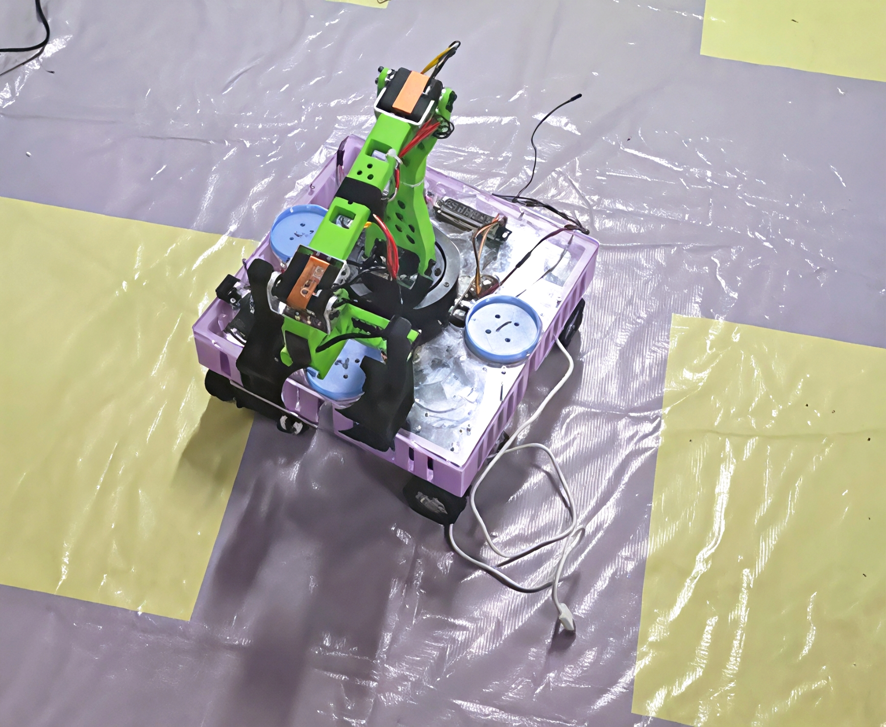
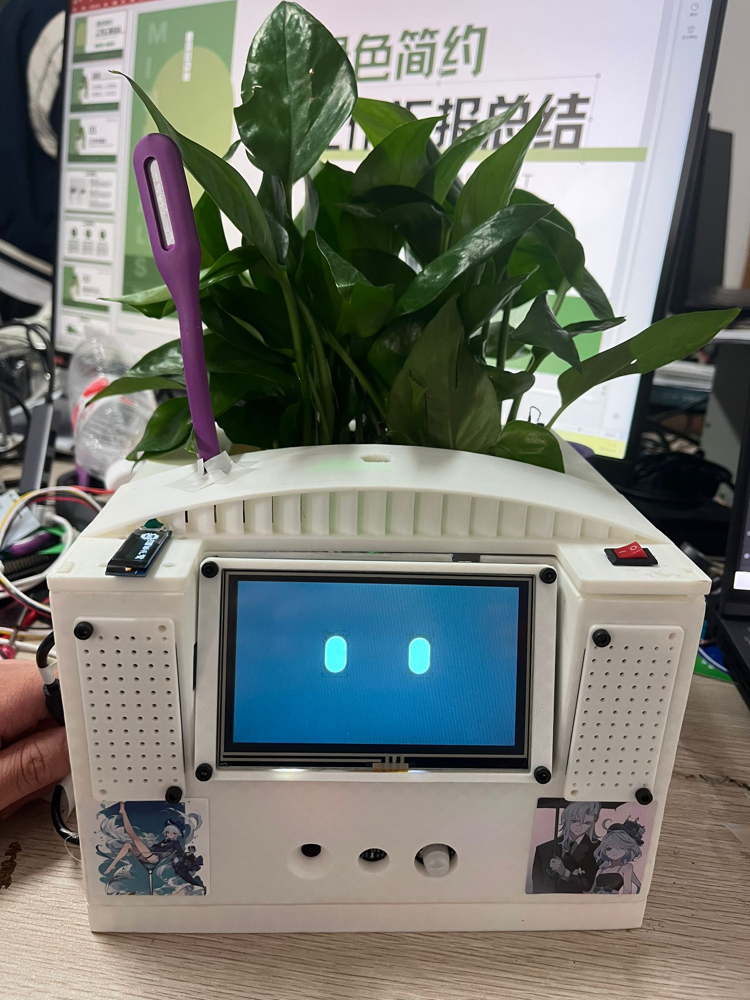
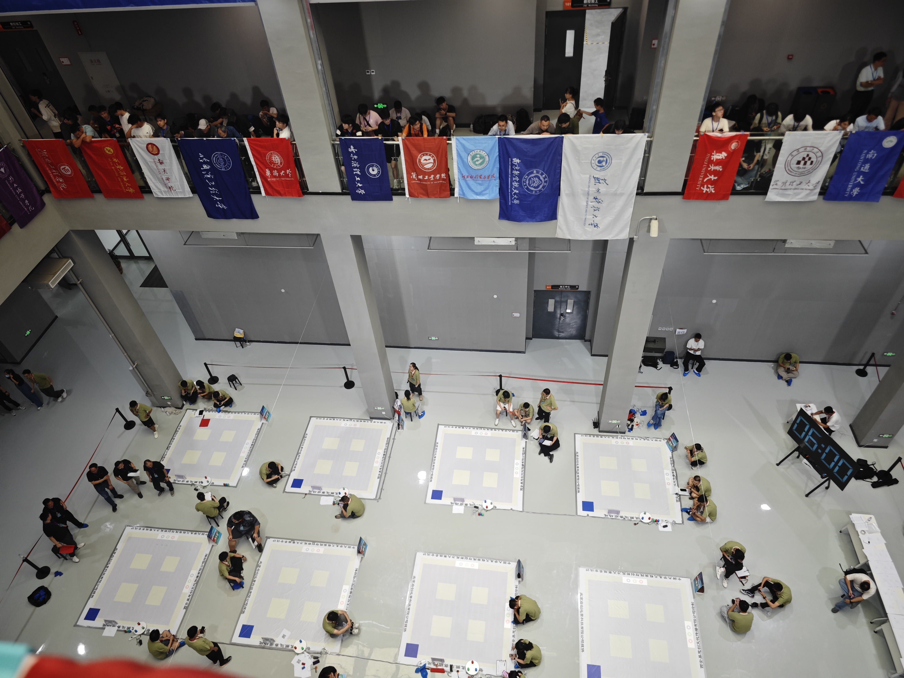

机器人系统
ROS2 Humble、Nav2、SLAM Toolbox、AMCL、robot_localization、TF/URDF、RPLidar、ZED 2i、系统状态机。
China Three Gorges University · CS · Robotics
我是廖荆武，三峡大学计算机与信息学院计算机科学与技术专业本科生。长期围绕机器人系统集成、 STM32/ESP32 控制、机器视觉、Jetson 边缘端部署和移动端调试工具做项目，重视可复现代码、现场联调和完整任务闭环。


About
我目前就读于三峡大学计算机与信息学院，计算机科学与技术专业本科，2023.09 至今。简历中记录的 学业成绩为 GPA 3.738/4、专业排名 2/244、加权平均分 94.327，核心课程包括数据库原理与应用、程序设计基础、 数据结构、计算机组成与结构、嵌入式技术。
我的技术路线偏“软硬结合”：一端连接 STM32/ESP32、传感器、执行器、CAN/串口和机械结构，另一端用 ROS2、Nav2、 SLAM、OpenCV、TensorRT、Jetson、FastAPI、React Native 和大模型接口完成系统级集成。 我更看重项目能否被复现、调试和交付，因此仓库中会保留系统架构、启动命令、通信协议、任务流程和调试指南。
Skills
ROS2 Humble、Nav2、SLAM Toolbox、AMCL、robot_localization、TF/URDF、RPLidar、ZED 2i、系统状态机。
STM32F103、ESP32、FreeRTOS、HAL、Keil、CubeMX、SocketCAN/CANopen、UART、PID/闭环控制、IMU/编码器反馈。
OpenCV、ArUco、HSV 分割、YOLO、TensorRT、CUDA、DashScope/Qwen、多模态任务理解、ASR/TTS。
Python、C/C++、TypeScript、React Native/Expo、FastAPI、WebSocket、MQTT、阿里云 IoT、GitHub、Markdown 文档化。
Projects
一套部署在 Jetson Orin Nano 上的多模态智慧零售机器人系统，打通底盘控制、SLAM/Nav2、ZED 视觉、YOLO/TensorRT、Qwen 任务理解、语音交互和现场 UI。

面向 2025 中国大学生工程实践与创新能力大赛智能物流赛道的全套软硬件方案，仓库描述与 README 标注 National Silver Award。
基于 STM32 + FreeRTOS 的智能花盆，融合多传感器采集、卡尔曼滤波、预测性灌溉、阿里云 IoT 和 AI 语音交互。
Experience
GPA 3.738/4，专业排名 2/244，加权平均分 94.327；微专业为人工智能技术与应用，具备计算机三级网络技术证书。
以队长身份完成智能物流搬运车项目，获国家级二等奖/全国银奖；项目沉淀了 STM32 主控、树莓派视觉、机械臂动作组、赛题规则和实物图片。
以队长身份推进 YLHB 智慧零售机器人系统，获国家级二等奖；围绕 Jetson、ROS2、Nav2、ZED、YOLO/TensorRT 和 Qwen 构建端到端任务闭环。
获第十九届“挑战杯”揭榜挂帅专项赛机器人赛道国家级二等奖、生物医学赛道国家级二等奖、睿抗机器人开发者大赛国家级二等奖、国家奖学金；担任班级班长、组织委员、优秀小导师和启明星副理事长。
围绕 FloraMind、智慧零售机器人移动端和 ROS2 智能车平台持续积累硬件驱动、云端通信、移动调试和系统联调经验。
Resume
页面内容已根据本地正式简历和公开 GitHub 项目继续补全。为避免公开页面暴露过多隐私，主页只展示邮箱和 GitHub； 默认提供 PDF 版本便于导师和团队直接查看，DOCX 版本保留为备用编辑文件。
Contact